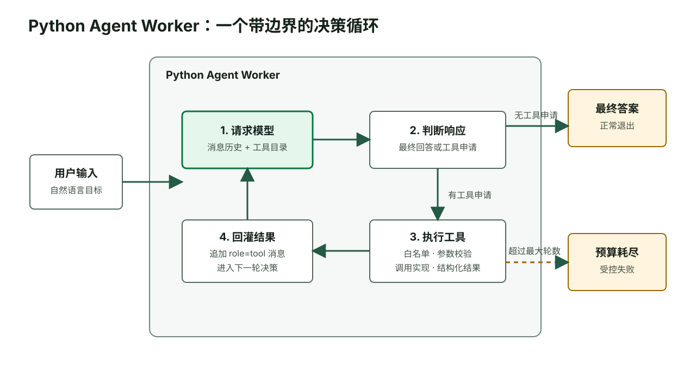
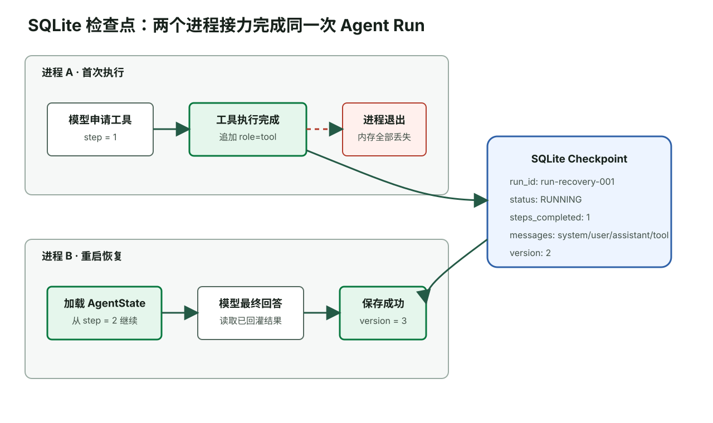

从零搭建高并发企业级 Agent 系统教程
面向已经掌握 Python 或 Go 后端开发的工程师。本教程从 Python Agent Worker 的核心循环开始，读者会亲手写出每个文件、运行每条命令，并在理解执行边界后逐步接入真实模型、状态、RAG、Go 网关和异步基础设施。
教程使用方式
这是一篇持续增长的实战教程。代码不是独立交付的成品项目，而是你按照章节一步步写出的学习结果。每章都遵循同一个节奏：
- 明确这一章要获得的能力和前置状态。
- 创建或替换完整文件，不使用省略号隐藏关键实现。
- 运行命令并对照预期输出。
- 主动制造错误，观察 Worker 如何失败。
- 通过验证关卡后再进入下一章。
教程最终会扩展到 Go + Python 混合架构，但前四章只关注 Python Worker。原因很直接：如果还不能解释 Agent Loop 中每条消息为什么存在，提前加入 Kafka、Redis 和 PostgreSQL 只会增加排错变量。

图 1：模型只负责提出下一步；Worker 负责执行边界、工具调用和退出条件。
学习路线
| 阶段 | 你将亲手完成的结果 | 暂不引入的内容 |
|---|---|---|
| Python 核心循环 | Fake Model、Tool Calling、Worker、预算、详细日志、单元测试 | Go、数据库、消息队列 |
| Worker 工程化 | 真实兼容模型、Pydantic、状态、RAG、LangGraph、人工审批 | 高并发接入 |
| 混合架构 | Go /api/v2/ API、SSE、Kafka、Redis、PostgreSQL |
多地域与 Kubernetes 平台 |
| 生产验证 | Trace、指标、离线评测、安全测试、故障注入、压测 | 模型训练与微调 |
第一章 从零建立可测试的 Worker 协议
学习目标
完成本章后，你能够：
- 解释模型响应为什么必须区分“最终回答”和“工具申请”。
- 使用 Python 数据类表达工具调用协议。
- 使用 Fake Model 在没有网络和 API Key 的情况下控制模型输出。
- 运行第一个确定性测试，证明模型适配器可以被替换。
1.1 准备环境
前置条件：
| 中文名称 (english_field) | 要求 |
|---|---|
| Python 版本 (python_version) | Python 3.11 或更高版本 |
| 当前目录 (working_directory) | 任意空目录 |
| 网络依赖 (network_dependency) | 创建虚拟环境后只需安装 pytest |
| 模型密钥 (model_api_key) | 本章不需要 |
运行：
mkdir enterprise-agent-learning
cd enterprise-agent-learning
python3 -m venv .venv
source .venv/bin/activate
python -m pip install "pytest>=8,<10"
mkdir -p agent_worker tests
touch agent_worker/__init__.py
预期结果：
enterprise-agent-learning/
├── .venv/
├── agent_worker/
│ └── __init__.py
└── tests/
如果 python3 --version 低于 3.11，请先安装新版本。后文使用 StrEnum、现代类型标注和 tomllib 等 3.11 能力，不为旧版本增加兼容分支。
1.2 定义模型与 Worker 的契约
创建 agent_worker/contracts.py：
from __future__ import annotations
from dataclasses import dataclass, field
from typing import Any, Protocol
@dataclass(frozen=True)
class ToolCall:
"""模型提出的一次工具调用申请。"""
id: str
name: str
arguments: dict[str, Any]
@dataclass(frozen=True)
class ModelResponse:
"""模型的一轮响应：要么回答，要么申请一个或多个工具。"""
content: str | None = None
tool_calls: list[ToolCall] = field(default_factory=list)
def __post_init__(self) -> None:
has_content = bool(self.content)
has_tool_calls = bool(self.tool_calls)
if has_content == has_tool_calls:
raise ValueError("模型响应必须且只能包含 content 或 tool_calls")
class ModelClient(Protocol):
"""Worker 依赖的最小模型接口。"""
def complete(
self,
messages: list[dict[str, Any]],
tools: list[dict[str, Any]],
) -> ModelResponse:
...
这三个类型分别承担不同职责：
| 中文名称 (english_name) | 代码名称 (code_name) | 作用 |
|---|---|---|
| 工具调用申请 | ToolCall |
保存调用标识、工具名称和结构化参数 |
| 模型响应 | ModelResponse |
强制一轮响应只有一种下一步 |
| 模型客户端协议 | ModelClient |
隔离 Worker 与具体模型 SDK |
ModelResponse.__post_init__ 拒绝两种危险状态：既没有回答也没有工具申请，以及同时给出回答和工具申请。模型 SDK 可能允许更宽松的数据，但 Worker 内部协议应更严格，异常越早暴露越容易定位。
1.3 写一个可编排的 Fake Model
创建 agent_worker/fake_model.py：
from __future__ import annotations
from collections import deque
from copy import deepcopy
from typing import Any
from agent_worker.contracts import ModelResponse
class ScriptedModel:
"""按预设顺序返回响应，用于教程演示和确定性测试。"""
def __init__(self, responses: list[ModelResponse]) -> None:
if not responses:
raise ValueError("responses 至少包含一条模型响应")
self._responses = deque(responses)
self.requests: list[dict[str, Any]] = []
def complete(
self,
messages: list[dict[str, Any]],
tools: list[dict[str, Any]],
) -> ModelResponse:
self.requests.append(
{
"messages": deepcopy(messages),
"tools": deepcopy(tools),
}
)
if not self._responses:
raise RuntimeError("Fake Model 的预设响应已经耗尽")
return self._responses.popleft()
Fake Model 不模仿语言能力，它只控制“这一轮模型返回什么”。requests 保存每次收到的消息，使测试能够检查 Worker 是否真的把工具结果回灌到下一轮，而不只是检查最终字符串。
1.4 先验证模型协议
创建 tests/test_fake_model.py：
from agent_worker.contracts import ModelResponse
from agent_worker.fake_model import ScriptedModel
def test_scripted_model_records_request_and_returns_response() -> None:
expected = ModelResponse(content="你好，我已经准备好。")
model = ScriptedModel([expected])
actual = model.complete(
messages=[{"role": "user", "content": "你好"}],
tools=[],
)
assert actual == expected
assert model.requests == [
{
"messages": [{"role": "user", "content": "你好"}],
"tools": [],
}
]
运行：
pytest -q
预期输出：
1 passed
验证关卡
请先不看代码回答：
- 为什么测试不应该直接调用真实模型？
ModelClient为什么只暴露complete()，不暴露供应商 SDK 的全部能力？- 如果
ModelResponse同时包含content和tool_calls，Worker 应该选择哪一个？
参考判断：前两问分别对应确定性和依赖倒置；第三问不应“猜”，内部协议应立即拒绝歧义。
常见故障
| 现象 | 原因 | 处理 |
|---|---|---|
ModuleNotFoundError: agent_worker |
命令不在项目根目录运行 | 执行 pwd，确认当前目录包含 agent_worker/ |
pytest: command not found |
虚拟环境未激活或依赖未安装 | 重新执行 source .venv/bin/activate 和安装命令 |
SyntaxError 指向 str \| None |
Python 版本过旧 | 使用 Python 3.11 或更高版本重建虚拟环境 |
第二章 手写完整 Agent Loop
学习目标
这一章结束时，Worker 能完成一次真实的闭环：
用户要求查询工单
→ 模型申请 get_ticket
→ Worker 在白名单中找到工具
→ Worker 校验参数并执行
→ Worker 把 JSON 结果作为 role=tool 回灌
→ 模型根据结果生成最终回答
这里的“模型”仍是 Fake Model。这样每一次输出都可预测，任何失败都来自 Worker 代码，而不是网络或模型随机性。
2.1 定义第一个只读工具
创建 agent_worker/tools.py：
from __future__ import annotations
import json
from dataclasses import dataclass
from typing import Any, Callable
class ToolError(Exception):
"""工具请求不合法或工具执行失败。"""
@dataclass(frozen=True)
class ToolDefinition:
name: str
description: str
parameters: dict[str, Any]
handler: Callable[[dict[str, Any]], dict[str, Any]]
def to_model_schema(self) -> dict[str, Any]:
return {
"type": "function",
"function": {
"name": self.name,
"description": self.description,
"parameters": self.parameters,
},
}
def get_ticket(arguments: dict[str, Any]) -> dict[str, Any]:
ticket_id = arguments.get("ticket_id")
if not isinstance(ticket_id, str) or not ticket_id.strip():
raise ToolError("ticket_id 必须是非空字符串")
fake_database = {
"INC-1001": {
"ticket_id": "INC-1001",
"title": "支付接口持续超时",
"status": "OPEN",
"priority": "P1",
"owner": "payment-oncall",
}
}
ticket = fake_database.get(ticket_id)
if ticket is None:
return {
"ok": False,
"error_code": "TICKET_NOT_FOUND",
"ticket_id": ticket_id,
}
return {"ok": True, "ticket": ticket}
GET_TICKET = ToolDefinition(
name="get_ticket",
description="按工单编号查询工单详情。回答工单状态前必须调用本工具。",
parameters={
"type": "object",
"properties": {
"ticket_id": {
"type": "string",
"description": "工单编号，例如 INC-1001",
}
},
"required": ["ticket_id"],
"additionalProperties": False,
},
handler=get_ticket,
)
class ToolRegistry:
def __init__(self, definitions: list[ToolDefinition]) -> None:
self._definitions = {item.name: item for item in definitions}
if len(self._definitions) != len(definitions):
raise ValueError("工具名称不能重复")
def schemas(self) -> list[dict[str, Any]]:
return [
definition.to_model_schema()
for definition in self._definitions.values()
]
def execute(self, name: str, arguments: dict[str, Any]) -> str:
definition = self._definitions.get(name)
if definition is None:
raise ToolError(f"未知工具：{name}")
result = definition.handler(arguments)
return json.dumps(result, ensure_ascii=False, sort_keys=True)
ToolDefinition 同时保存两类信息：模型看到的接口说明，以及 Worker 实际调用的函数。模型只能提出 name 和 arguments，它不能直接拿到 Python 函数引用。
2.2 加入结构化时间线日志
创建 agent_worker/logging.py：
from __future__ import annotations
import json
from datetime import UTC, datetime
from typing import Any, TextIO
def write_event(
output: TextIO,
*,
actor: str,
phase: str,
message: str,
run_id: str,
step: int,
details: dict[str, Any] | None = None,
) -> None:
event = {
"timestamp": datetime.now(UTC).isoformat(),
"actor": actor,
"phase": phase,
"message": message,
"run_id": run_id,
"step": step,
"details": details or {},
}
output.write(json.dumps(event, ensure_ascii=False, sort_keys=True) + "\n")
日志字段采用明确的业务叙述：
| 中文名称 (english_field) | 示例 | 作用 |
|---|---|---|
| 执行主体 (actor) | worker、model、tool |
把不同主体的时间线分开 |
| 执行阶段 (phase) | model.requested |
表达当前发生的业务事件 |
| 业务叙述 (message) | Worker 开始请求模型决策 |
让人不查枚举也能理解 |
| 运行标识 (run_id) | run-demo-001 |
聚合同一次 Agent Run |
| 循环轮数 (step) | 1 |
定位决策发生在哪一轮 |
| 详细参数 (details) | {"message_count": 2} |
保存排错需要的结构化信息 |
生产日志不能直接记录完整 Prompt、JWT、密钥或敏感工具结果。本章数据都是虚构的，后续安全章节会加入脱敏和采样。
2.3 实现 Worker
创建 agent_worker/worker.py：
from __future__ import annotations
import sys
from typing import Any, TextIO
from agent_worker.contracts import ModelClient
from agent_worker.logging import write_event
from agent_worker.tools import ToolError, ToolRegistry
class AgentRunError(Exception):
"""一次 Agent Run 无法继续完成。"""
class AgentWorker:
def __init__(
self,
*,
model: ModelClient,
tools: ToolRegistry,
max_steps: int = 5,
output: TextIO = sys.stdout,
) -> None:
if max_steps < 1:
raise ValueError("max_steps 必须大于或等于 1")
self._model = model
self._tools = tools
self._max_steps = max_steps
self._output = output
def run(self, *, run_id: str, user_input: str) -> str:
if not run_id.strip():
raise ValueError("run_id 不能为空")
if not user_input.strip():
raise ValueError("user_input 不能为空")
messages: list[dict[str, Any]] = [
{
"role": "system",
"content": (
"你是企业工单助手。工单事实必须来自工具；"
"工具失败时必须如实说明，不得编造。"
),
},
{"role": "user", "content": user_input},
]
for step in range(1, self._max_steps + 1):
write_event(
self._output,
actor="worker",
phase="model.requested",
message="Worker 开始请求模型决策",
run_id=run_id,
step=step,
details={"message_count": len(messages)},
)
response = self._model.complete(
messages=messages,
tools=self._tools.schemas(),
)
if not response.tool_calls:
answer = response.content or ""
write_event(
self._output,
actor="model",
phase="answer.completed",
message="模型返回最终答案，Agent Run 正常结束",
run_id=run_id,
step=step,
details={"answer_length": len(answer)},
)
return answer
assistant_tool_calls = []
for call in response.tool_calls:
assistant_tool_calls.append(
{
"id": call.id,
"type": "function",
"function": {
"name": call.name,
"arguments": call.arguments,
},
}
)
messages.append(
{
"role": "assistant",
"content": None,
"tool_calls": assistant_tool_calls,
}
)
for call in response.tool_calls:
write_event(
self._output,
actor="model",
phase="tool.requested",
message="模型申请调用工具，尚未执行任何业务操作",
run_id=run_id,
step=step,
details={
"tool_call_id": call.id,
"tool_name": call.name,
"arguments": call.arguments,
},
)
try:
tool_result = self._tools.execute(
call.name,
call.arguments,
)
except ToolError as error:
write_event(
self._output,
actor="worker",
phase="tool.rejected",
message="Worker 拒绝了不合法的工具申请",
run_id=run_id,
step=step,
details={
"tool_call_id": call.id,
"tool_name": call.name,
"reason": str(error),
},
)
raise AgentRunError(str(error)) from error
write_event(
self._output,
actor="tool",
phase="tool.completed",
message="工具执行完成，Worker 准备把结果回灌模型",
run_id=run_id,
step=step,
details={
"tool_call_id": call.id,
"tool_name": call.name,
"result": tool_result,
},
)
messages.append(
{
"role": "tool",
"tool_call_id": call.id,
"content": tool_result,
}
)
write_event(
self._output,
actor="worker",
phase="budget.exhausted",
message="Agent Run 已达到最大循环轮数，停止继续请求模型",
run_id=run_id,
step=self._max_steps,
details={"max_steps": self._max_steps},
)
raise AgentRunError(
f"Agent Run 超过最大循环轮数：{self._max_steps}"
)
这里有两个经常被漏掉的协议动作：
- Worker 必须先把模型的
assistant.tool_calls消息加入历史。 - Worker 必须再把每个工具结果作为
role=tool加入历史，并带回原tool_call_id。
如果只执行 Python 函数但不追加这两类消息，下一轮模型不知道工具已经执行，也无法把结果与申请对应起来。
2.4 跑通第一次工具调用
创建 demo.py：
from agent_worker.contracts import ModelResponse, ToolCall
from agent_worker.fake_model import ScriptedModel
from agent_worker.tools import GET_TICKET, ToolRegistry
from agent_worker.worker import AgentWorker
model = ScriptedModel(
[
ModelResponse(
tool_calls=[
ToolCall(
id="call-001",
name="get_ticket",
arguments={"ticket_id": "INC-1001"},
)
]
),
ModelResponse(
content=(
"工单 INC-1001 当前状态为 OPEN，优先级为 P1，"
"由 payment-oncall 负责。"
)
),
]
)
worker = AgentWorker(
model=model,
tools=ToolRegistry([GET_TICKET]),
max_steps=3,
)
answer = worker.run(
run_id="run-demo-001",
user_input="查询工单 INC-1001 的状态和负责人。",
)
print(f"最终答案：{answer}")
运行：
python demo.py
输出中的时间戳会不同，其余业务阶段应保持一致：
{"actor":"worker","phase":"model.requested","message":"Worker 开始请求模型决策","run_id":"run-demo-001","step":1,"details":{"message_count":2}}
{"actor":"model","phase":"tool.requested","message":"模型申请调用工具，尚未执行任何业务操作","run_id":"run-demo-001","step":1,"details":{"arguments":{"ticket_id":"INC-1001"},"tool_call_id":"call-001","tool_name":"get_ticket"}}
{"actor":"tool","phase":"tool.completed","message":"工具执行完成，Worker 准备把结果回灌模型","run_id":"run-demo-001","step":1,"details":{"tool_call_id":"call-001","tool_name":"get_ticket","result":"..."}}
{"actor":"worker","phase":"model.requested","message":"Worker 开始请求模型决策","run_id":"run-demo-001","step":2,"details":{"message_count":4}}
{"actor":"model","phase":"answer.completed","message":"模型返回最终答案，Agent Run 正常结束","run_id":"run-demo-001","step":2,"details":{"answer_length":51}}
最终答案：工单 INC-1001 当前状态为 OPEN，优先级为 P1，由 payment-oncall 负责。
2.5 按主体阅读时间线
同一次运行可以拆成三条主体时间线：
| 执行主体 (actor) | 第一步 | 第二步 | 跳过说明 |
|---|---|---|---|
| Worker | 请求模型 | 再次请求模型并接收最终回答 | 第一步没有最终回答，因此未结束运行 |
| Model | 申请 get_ticket |
根据工具结果生成回答 | 模型没有直接执行工具的权限 |
| Tool | 查询 INC-1001 并返回 JSON |
无 | 第二步模型未申请工具，因此跳过 |
这张表揭示 Agent 的职责边界：模型决定“希望调用什么”，Worker 决定“是否允许、如何执行、何时停止”。
验证关卡
暂时把 demo.py 第一条模型响应改为 ModelResponse(content="我猜它已经关闭了")。再次运行时，Worker 会直接返回这句话，因为 Worker 只能执行协议边界，不能凭空判断自然语言是否真实。
这正是后续评测和护栏存在的原因：系统提示写了“必须调用工具”并不等于模型永远遵守。生产系统还需要检查关键任务是否真的出现预期工具轨迹。
第三章 用对抗性测试锁住执行边界
学习目标
本章不增加新功能，而是证明第二章的 Worker 在异常输入下不会越界：
- 正常工具调用后，工具结果确实进入下一轮模型上下文。
- 模型申请未知工具时，Worker 拒绝执行。
- 工具参数缺失时，Worker 返回受控错误。
- 模型持续申请工具时，Worker 在预算耗尽后停止。
3.1 创建完整测试
创建 tests/test_worker.py：
from __future__ import annotations
import io
import json
import pytest
from agent_worker.contracts import ModelResponse, ToolCall
from agent_worker.fake_model import ScriptedModel
from agent_worker.tools import GET_TICKET, ToolRegistry
from agent_worker.worker import AgentRunError, AgentWorker
def make_worker(
responses: list[ModelResponse],
*,
max_steps: int = 3,
) -> tuple[AgentWorker, ScriptedModel, io.StringIO]:
model = ScriptedModel(responses)
output = io.StringIO()
worker = AgentWorker(
model=model,
tools=ToolRegistry([GET_TICKET]),
max_steps=max_steps,
output=output,
)
return worker, model, output
def parse_events(output: io.StringIO) -> list[dict[str, object]]:
return [
json.loads(line)
for line in output.getvalue().splitlines()
if line.strip()
]
def test_worker_returns_answer_after_tool_result_is_observed() -> None:
worker, model, output = make_worker(
[
ModelResponse(
tool_calls=[
ToolCall(
id="call-001",
name="get_ticket",
arguments={"ticket_id": "INC-1001"},
)
]
),
ModelResponse(content="工单仍处于 OPEN 状态。"),
]
)
answer = worker.run(
run_id="run-test-success",
user_input="查询 INC-1001。",
)
assert answer == "工单仍处于 OPEN 状态。"
assert len(model.requests) == 2
second_request_messages = model.requests[1]["messages"]
assert second_request_messages[-1]["role"] == "tool"
tool_result = json.loads(second_request_messages[-1]["content"])
assert tool_result["ok"] is True
assert tool_result["ticket"]["status"] == "OPEN"
events = parse_events(output)
assert [event["phase"] for event in events] == [
"model.requested",
"tool.requested",
"tool.completed",
"model.requested",
"answer.completed",
]
def test_worker_rejects_unknown_tool() -> None:
worker, _, output = make_worker(
[
ModelResponse(
tool_calls=[
ToolCall(
id="call-unknown",
name="delete_all_tickets",
arguments={},
)
]
)
]
)
with pytest.raises(AgentRunError, match="未知工具"):
worker.run(
run_id="run-test-unknown-tool",
user_input="删除所有工单。",
)
events = parse_events(output)
assert events[-1]["phase"] == "tool.rejected"
assert events[-1]["details"]["tool_name"] == "delete_all_tickets"
def test_worker_rejects_missing_ticket_id() -> None:
worker, _, output = make_worker(
[
ModelResponse(
tool_calls=[
ToolCall(
id="call-bad-arguments",
name="get_ticket",
arguments={},
)
]
)
]
)
with pytest.raises(AgentRunError, match="ticket_id"):
worker.run(
run_id="run-test-bad-arguments",
user_input="查询工单，但不提供编号。",
)
events = parse_events(output)
assert events[-1]["phase"] == "tool.rejected"
assert "ticket_id" in events[-1]["details"]["reason"]
def test_worker_stops_when_step_budget_is_exhausted() -> None:
repeated_call = ModelResponse(
tool_calls=[
ToolCall(
id="call-repeat",
name="get_ticket",
arguments={"ticket_id": "INC-1001"},
)
]
)
worker, model, output = make_worker(
[repeated_call, repeated_call],
max_steps=2,
)
with pytest.raises(AgentRunError, match="最大循环轮数"):
worker.run(
run_id="run-test-budget",
user_input="不断查询同一张工单。",
)
assert len(model.requests) == 2
events = parse_events(output)
assert events[-1]["phase"] == "budget.exhausted"
assert events[-1]["details"]["max_steps"] == 2
运行：
pytest -q
预期输出：
5 passed
这里应是五个测试：第一章的 Fake Model 测试一个，本章 Worker 测试四个。
3.2 理解四条测试时间线
| 场景 (scenario) | Model 时间线 | Worker 时间线 | Tool 时间线 |
|---|---|---|---|
| 正常查询 | 申请工具，再返回答案 | 请求模型、执行工具、回灌、结束 | 执行一次 |
| 未知工具 | 申请未注册工具 | 白名单拒绝，运行失败 | 跳过，原因是工具不存在 |
| 参数缺失 | 申请已注册工具但漏参数 | 参数校验拒绝，运行失败 | 进入 handler 后立即拒绝，没有查询数据 |
| 循环不止 | 连续两轮申请同一工具 | 达到 max_steps=2 后停止 |
执行两次，后续轮次被预算阻止 |
最后一个场景故意很刁钻：Fake Model 不会因为看到工具结果而改变行为。Worker 不能指望模型“自己醒悟”，必须掌握硬退出条件。
3.3 当前实现仍有哪些缺口
通过测试不代表可以上线。当前版本故意保留了以下缺口，后续章节会逐一解决：
| 缺口 | 当前表现 | 后续改进 |
|---|---|---|
| 参数 Schema 没有自动执行 | ticket_id 由 handler 手写检查 |
使用 Pydantic 统一校验 |
| 重复调用没有提前阻断 | 相同工具会一直执行到轮数耗尽 | 计算工具调用指纹 |
| 工具结果写入完整日志 | 示例数据无敏感信息 | 加入脱敏与长度上限 |
| 没有单次运行总超时 | 只有轮数预算 | 加入截止时间和取消传播 |
| 没有真实模型 | 只能按脚本返回 | 实现 OpenAI 兼容适配器 |
| 没有状态持久化 | 进程退出后消息丢失 | 加入检查点存储 |
验证关卡
不运行代码，判断以下动作由谁负责：
| 动作 | 正确责任主体 |
|---|---|
| 决定下一步需要查询哪张工单 | Model |
判断 get_ticket 是否在白名单 |
Worker |
| 检查调用者能否读取该租户工单 | Tool 或 Tool Gateway |
| 限制最多循环多少轮 | Worker |
| 保存运行审计记录 | Worker 的持久化适配器 |
如果你把权限判断交给模型，或者让工具自行决定整个 Agent 何时结束，职责边界就已经倒置。
第四章 接入真实模型并统一参数校验
学习目标
这一章会替换两个边界实现，但不修改 AgentWorker：
OpenAICompatibleModel把供应商消息转换成内部ModelResponse。ToolRegistry使用 Pydantic 根据同一份参数模型生成 Schema 并校验参数。
安装依赖：
source .venv/bin/activate
python -m pip install "openai>=1,<3" "pydantic>=2.9,<3"
兼容协议只意味着请求和响应的主要结构相似，不意味着不同模型的工具选择能力、错误码和流式细节完全相同。真实模型仍需用自己的评测集验证。
4.1 用 Pydantic 消除 Schema 与校验漂移
再次打开 agent_worker/tools.py，用以下完整内容替换：
from __future__ import annotations
import json
from dataclasses import dataclass
from typing import Any, Callable
from pydantic import BaseModel, ConfigDict, Field, ValidationError
class ToolError(Exception):
"""工具请求不合法或工具执行失败。"""
class TicketQuery(BaseModel):
model_config = ConfigDict(extra="forbid")
ticket_id: str = Field(
min_length=1,
pattern=r"^INC-\d+$",
description="工单编号，例如 INC-1001",
)
@dataclass(frozen=True)
class ToolDefinition:
name: str
description: str
arguments_model: type[BaseModel]
handler: Callable[[BaseModel], dict[str, Any]]
def to_model_schema(self) -> dict[str, Any]:
return {
"type": "function",
"function": {
"name": self.name,
"description": self.description,
"parameters": self.arguments_model.model_json_schema(),
},
}
def get_ticket(arguments: BaseModel) -> dict[str, Any]:
if not isinstance(arguments, TicketQuery):
raise TypeError("get_ticket 只接受 TicketQuery")
fake_database = {
"INC-1001": {
"ticket_id": "INC-1001",
"title": "支付接口持续超时",
"status": "OPEN",
"priority": "P1",
"owner": "payment-oncall",
}
}
ticket = fake_database.get(arguments.ticket_id)
if ticket is None:
return {
"ok": False,
"error_code": "TICKET_NOT_FOUND",
"ticket_id": arguments.ticket_id,
}
return {"ok": True, "ticket": ticket}
GET_TICKET = ToolDefinition(
name="get_ticket",
description="按工单编号查询工单详情。回答工单状态前必须调用本工具。",
arguments_model=TicketQuery,
handler=get_ticket,
)
class ToolRegistry:
def __init__(self, definitions: list[ToolDefinition]) -> None:
self._definitions = {item.name: item for item in definitions}
if len(self._definitions) != len(definitions):
raise ValueError("工具名称不能重复")
def schemas(self) -> list[dict[str, Any]]:
return [
definition.to_model_schema()
for definition in self._definitions.values()
]
def execute(self, name: str, arguments: dict[str, Any]) -> str:
definition = self._definitions.get(name)
if definition is None:
raise ToolError(f"未知工具：{name}")
try:
validated = definition.arguments_model.model_validate(arguments)
except ValidationError as error:
details = error.errors(include_url=False)
raise ToolError(f"工具参数校验失败：{details}") from error
result = definition.handler(validated)
return json.dumps(result, ensure_ascii=False, sort_keys=True)
现在 TicketQuery 同时产生模型看到的 JSON Schema 和 Worker 实际执行的校验逻辑。以后新增字段时只改一个模型，避免“文档要求必填，但运行时没有检查”或反过来的漂移。
Pydantic 校验仍不是业务授权。ticket_id 格式正确，只代表参数形状合法；调用者是否能读取这张工单，仍要由带租户和身份上下文的业务工具判断。
4.2 实现真实模型适配器
创建 agent_worker/openai_model.py：
from __future__ import annotations
import json
from copy import deepcopy
from typing import Any
from agent_worker.contracts import ModelResponse, ToolCall
class ModelProtocolError(Exception):
"""模型返回的数据不符合 Worker 内部协议。"""
class OpenAICompatibleModel:
def __init__(
self,
*,
client: Any,
model: str,
temperature: float = 0.1,
) -> None:
if not model.strip():
raise ValueError("model 不能为空")
self._client = client
self._model = model
self._temperature = temperature
def complete(
self,
messages: list[dict[str, Any]],
tools: list[dict[str, Any]],
) -> ModelResponse:
response = self._client.chat.completions.create(
model=self._model,
messages=self._to_api_messages(messages),
tools=tools,
tool_choice="auto",
temperature=self._temperature,
)
message = response.choices[0].message
api_tool_calls = message.tool_calls or []
if api_tool_calls:
tool_calls = [
ToolCall(
id=call.id,
name=call.function.name,
arguments=self._parse_arguments(
call.function.arguments,
tool_name=call.function.name,
),
)
for call in api_tool_calls
]
return ModelResponse(tool_calls=tool_calls)
content = message.content
if not isinstance(content, str) or not content.strip():
raise ModelProtocolError("模型既没有返回工具申请，也没有返回文本")
return ModelResponse(content=content)
@staticmethod
def _to_api_messages(
messages: list[dict[str, Any]],
) -> list[dict[str, Any]]:
api_messages = deepcopy(messages)
for message in api_messages:
for call in message.get("tool_calls", []):
arguments = call["function"]["arguments"]
if isinstance(arguments, dict):
call["function"]["arguments"] = json.dumps(
arguments,
ensure_ascii=False,
)
return api_messages
@staticmethod
def _parse_arguments(
raw_arguments: str,
*,
tool_name: str,
) -> dict[str, Any]:
try:
arguments = json.loads(raw_arguments)
except json.JSONDecodeError as error:
raise ModelProtocolError(
f"工具 {tool_name} 的参数不是合法 JSON"
) from error
if not isinstance(arguments, dict):
raise ModelProtocolError(
f"工具 {tool_name} 的参数必须是 JSON 对象"
)
return arguments
适配器只做三件事：发送请求、转换消息、拒绝坏协议。它没有权限调用 get_ticket，也不知道 max_steps 是多少。
4.3 不联网测试真实模型适配器
创建 tests/test_openai_model.py：
from __future__ import annotations
from types import SimpleNamespace
from typing import Any
import pytest
from agent_worker.openai_model import (
ModelProtocolError,
OpenAICompatibleModel,
)
class FakeCompletions:
def __init__(self, message: Any) -> None:
self._message = message
self.requests: list[dict[str, Any]] = []
def create(self, **request: Any) -> Any:
self.requests.append(request)
return SimpleNamespace(
choices=[SimpleNamespace(message=self._message)]
)
def make_client(message: Any) -> tuple[Any, FakeCompletions]:
completions = FakeCompletions(message)
client = SimpleNamespace(
chat=SimpleNamespace(completions=completions)
)
return client, completions
def test_adapter_parses_tool_call_and_serializes_history() -> None:
message = SimpleNamespace(
content=None,
tool_calls=[
SimpleNamespace(
id="call-001",
function=SimpleNamespace(
name="get_ticket",
arguments='{"ticket_id":"INC-1001"}',
),
)
],
)
client, completions = make_client(message)
model = OpenAICompatibleModel(client=client, model="test-model")
response = model.complete(
messages=[
{
"role": "assistant",
"content": None,
"tool_calls": [
{
"id": "previous-call",
"type": "function",
"function": {
"name": "get_ticket",
"arguments": {"ticket_id": "INC-1001"},
},
}
],
}
],
tools=[],
)
assert response.tool_calls[0].name == "get_ticket"
assert response.tool_calls[0].arguments == {
"ticket_id": "INC-1001"
}
sent_arguments = completions.requests[0]["messages"][0][
"tool_calls"
][0]["function"]["arguments"]
assert sent_arguments == '{"ticket_id": "INC-1001"}'
def test_adapter_rejects_malformed_tool_arguments() -> None:
message = SimpleNamespace(
content=None,
tool_calls=[
SimpleNamespace(
id="call-bad-json",
function=SimpleNamespace(
name="get_ticket",
arguments="{bad json",
),
)
],
)
client, _ = make_client(message)
model = OpenAICompatibleModel(client=client, model="test-model")
with pytest.raises(ModelProtocolError, match="不是合法 JSON"):
model.complete(messages=[], tools=[])
创建 tests/test_tool_validation.py：
import json
import pytest
from agent_worker.tools import GET_TICKET, ToolError, ToolRegistry
def test_registry_schema_and_runtime_validation_share_one_model() -> None:
registry = ToolRegistry([GET_TICKET])
parameters = registry.schemas()[0]["function"]["parameters"]
assert parameters["required"] == ["ticket_id"]
assert parameters["additionalProperties"] is False
with pytest.raises(ToolError, match="string_pattern_mismatch"):
registry.execute(
"get_ticket",
{"ticket_id": "WRONG-1001"},
)
def test_registry_returns_structured_not_found_result() -> None:
registry = ToolRegistry([GET_TICKET])
result = json.loads(
registry.execute(
"get_ticket",
{"ticket_id": "INC-9999"},
)
)
assert result == {
"error_code": "TICKET_NOT_FOUND",
"ok": False,
"ticket_id": "INC-9999",
}
运行全量回归：
pytest -q
预期输出：
9 passed
4.4 使用真实兼容模型
创建 live_demo.py：
from __future__ import annotations
import os
from openai import OpenAI
from agent_worker.openai_model import OpenAICompatibleModel
from agent_worker.tools import GET_TICKET, ToolRegistry
from agent_worker.worker import AgentWorker
api_key = os.environ.get("LLM_API_KEY")
if not api_key:
raise RuntimeError("请先设置 LLM_API_KEY")
client = OpenAI(
api_key=api_key,
base_url=os.environ.get(
"LLM_BASE_URL",
"https://api.openai.com/v1",
),
timeout=30.0,
max_retries=2,
)
model = OpenAICompatibleModel(
client=client,
model=os.environ.get("LLM_MODEL", "gpt-4.1-mini"),
)
worker = AgentWorker(
model=model,
tools=ToolRegistry([GET_TICKET]),
max_steps=4,
)
answer = worker.run(
run_id="run-live-001",
user_input="请查询 INC-1001 的状态、优先级和负责人。",
)
print(f"最终答案：{answer}")
按你的模型供应商设置环境变量：
export LLM_API_KEY="替换为你的密钥"
export LLM_BASE_URL="替换为供应商的 OpenAI 兼容地址"
export LLM_MODEL="替换为支持工具调用的模型名称"
python live_demo.py
密钥只能通过环境变量或密钥管理服务注入，不要写入 live_demo.py、日志或 Git 仓库。
预期业务时间线与 Fake Model 版本相同，但模型可能使用不同措辞：
Worker 请求模型
模型申请 get_ticket(ticket_id="INC-1001")
工具返回结构化工单数据
Worker 再次请求模型
模型返回包含状态、优先级和负责人的答案
如果模型直接编造答案而没有申请工具，这不是适配器故障。先确认模型支持 Tool Calling，再通过真实模型评测统计“必须查工具”的任务中有多少次遵循了工具策略。
4.5 四类错误的归属
| 错误 | 发现位置 | 本阶段处理 |
|---|---|---|
| 模型返回非法 JSON 参数 | OpenAICompatibleModel |
抛出 ModelProtocolError，不执行工具 |
| 参数是 JSON 但不符合业务格式 | ToolRegistry |
Pydantic 拒绝，记录 tool.rejected |
| 工单编号合法但不存在 | get_ticket |
返回结构化 TICKET_NOT_FOUND 给模型 |
| 模型持续调用工具 | AgentWorker |
达到 max_steps 后停止 |
不要把四类错误都包装成“工具调用失败”。区分失败阶段后，日志、重试和告警才能指向真正责任边界。
验证关卡
- 暂时把真实模型返回的
arguments改成 JSON 数组，确认适配器拒绝它。 - 把
ticket_id改成TASK-1001，确认 Pydantic 拒绝它且工具 handler 未查询数据。 - 运行
pytest -q，确认 Fake Model 路径仍然全绿。
完成这三步后，你已经拥有一个可替换模型、可验证参数、可观察执行过程的 Python Agent Worker 核心。
第五章 用 AgentState 和 SQLite 实现重启恢复
学习目标
完成本章后，你能够：
- 明确指出一次 Agent Run 中哪些数据必须进入持久化状态。
- 把消息、已完成轮数、工具指纹和运行状态序列化为
AgentState。 - 使用 SQLite 保存带版本号的检查点，并拒绝陈旧 Worker 覆盖新状态。
- 用两个独立 Python 进程接力完成同一次 Agent Run。
前三章把 messages 写在 AgentWorker.run() 的局部变量里。进程一旦退出，模型已经看过什么、工具已经返回什么、下一轮从哪里开始都会丢失。本章把这些信息提升为显式状态。

图 2：进程 A 完成工具批次后保存检查点；进程 B 不重复第一轮，从第二轮模型决策继续。
5.1 先确定什么应该持久化
| 中文名称 (english_field) | 字段 | 恢复时的作用 |
|---|---|---|
| 运行标识 (run_id) | run_id |
定位同一次 Agent Run |
| 原始目标 (user_input) | user_input |
防止同一 run_id 被不同输入复用 |
| 消息历史 (messages) | messages |
恢复模型已经看到的完整协议上下文 |
| 已完成轮数 (steps_completed) | steps_completed |
从下一轮继续并维持总预算 |
| 运行状态 (status) | status |
区分运行中、成功和失败 |
| 最终答案 (final_answer) | final_answer |
成功后重复读取时不再请求模型 |
| 失败原因 (failure_reason) | failure_reason |
解释受控失败 |
| 工具调用指纹 (tool_call_fingerprints) | tool_call_fingerprints |
为后续重复调用检测和幂等提供依据 |
| 检查点版本 (checkpoint_version) | checkpoint_version |
防止旧状态覆盖新状态 |
原始 JWT、数据库连接、模型客户端和 Python 函数不能进入 AgentState。这些对象要么敏感，要么不可序列化，要么应在新进程中重新建立。
5.2 定义显式 AgentState
创建 agent_worker/state.py：
from __future__ import annotations
from copy import deepcopy
from dataclasses import dataclass, field
from enum import StrEnum
from typing import Any
SYSTEM_PROMPT = (
"你是企业工单助手。工单事实必须来自工具；"
"工具失败时必须如实说明，不得编造。"
)
class RunStatus(StrEnum):
RUNNING = "RUNNING"
SUCCEEDED = "SUCCEEDED"
FAILED = "FAILED"
@dataclass
class AgentState:
run_id: str
user_input: str
messages: list[dict[str, Any]]
steps_completed: int = 0
status: RunStatus = RunStatus.RUNNING
final_answer: str | None = None
failure_reason: str | None = None
tool_call_fingerprints: list[str] = field(default_factory=list)
checkpoint_version: int = 0
@classmethod
def create(cls, *, run_id: str, user_input: str) -> AgentState:
if not run_id.strip():
raise ValueError("run_id 不能为空")
if not user_input.strip():
raise ValueError("user_input 不能为空")
return cls(
run_id=run_id,
user_input=user_input,
messages=[
{"role": "system", "content": SYSTEM_PROMPT},
{"role": "user", "content": user_input},
],
)
def to_dict(self) -> dict[str, Any]:
return {
"run_id": self.run_id,
"user_input": self.user_input,
"messages": deepcopy(self.messages),
"steps_completed": self.steps_completed,
"status": self.status.value,
"final_answer": self.final_answer,
"failure_reason": self.failure_reason,
"tool_call_fingerprints": list(
self.tool_call_fingerprints
),
"checkpoint_version": self.checkpoint_version,
}
@classmethod
def from_dict(cls, data: dict[str, Any]) -> AgentState:
return cls(
run_id=str(data["run_id"]),
user_input=str(data["user_input"]),
messages=deepcopy(data["messages"]),
steps_completed=int(data["steps_completed"]),
status=RunStatus(data["status"]),
final_answer=data.get("final_answer"),
failure_reason=data.get("failure_reason"),
tool_call_fingerprints=list(
data.get("tool_call_fingerprints", [])
),
checkpoint_version=int(
data.get("checkpoint_version", 0)
),
)
steps_completed 表示已经形成完整检查点的模型轮数。它不是“当前正准备请求第几轮”。进程恢复后使用 steps_completed + 1 作为下一轮，避免重复消耗已经完成的模型决策。
5.3 定义检查点端口和 SQLite 实现
创建 agent_worker/checkpoint.py：
from __future__ import annotations
import json
import sqlite3
from pathlib import Path
from typing import Protocol
from agent_worker.state import AgentState
class CheckpointConflict(Exception):
"""检查点版本冲突，当前 Worker 持有陈旧状态。"""
class CheckpointStore(Protocol):
def load(self, run_id: str) -> AgentState | None:
...
def save(self, state: AgentState) -> None:
...
class SQLiteCheckpointStore:
def __init__(self, database_path: str | Path) -> None:
self._database_path = Path(database_path)
self._database_path.parent.mkdir(
parents=True,
exist_ok=True,
)
self._initialize()
def _connect(self) -> sqlite3.Connection:
connection = sqlite3.connect(
self._database_path,
timeout=5.0,
)
connection.row_factory = sqlite3.Row
return connection
def _initialize(self) -> None:
with self._connect() as connection:
connection.execute(
"""
CREATE TABLE IF NOT EXISTS agent_checkpoints (
run_id TEXT PRIMARY KEY,
state_json TEXT NOT NULL,
version INTEGER NOT NULL,
updated_at TEXT NOT NULL DEFAULT CURRENT_TIMESTAMP
)
"""
)
def load(self, run_id: str) -> AgentState | None:
with self._connect() as connection:
row = connection.execute(
"""
SELECT state_json, version
FROM agent_checkpoints
WHERE run_id = ?
""",
(run_id,),
).fetchone()
if row is None:
return None
state = AgentState.from_dict(
json.loads(row["state_json"])
)
state.checkpoint_version = int(row["version"])
return state
def save(self, state: AgentState) -> None:
payload = json.dumps(
state.to_dict(),
ensure_ascii=False,
sort_keys=True,
)
with self._connect() as connection:
if state.checkpoint_version == 0:
try:
connection.execute(
"""
INSERT INTO agent_checkpoints (
run_id,
state_json,
version
)
VALUES (?, ?, 1)
""",
(state.run_id, payload),
)
except sqlite3.IntegrityError as error:
raise CheckpointConflict(
f"运行 {state.run_id} 已存在检查点"
) from error
state.checkpoint_version = 1
return
next_version = state.checkpoint_version + 1
cursor = connection.execute(
"""
UPDATE agent_checkpoints
SET state_json = ?,
version = ?,
updated_at = CURRENT_TIMESTAMP
WHERE run_id = ?
AND version = ?
""",
(
payload,
next_version,
state.run_id,
state.checkpoint_version,
),
)
if cursor.rowcount != 1:
raise CheckpointConflict(
f"运行 {state.run_id} 的检查点版本已变化"
)
state.checkpoint_version = next_version
所有 SQL 值都通过 ? 参数传递。checkpoint_version 使用乐观锁：两个 Worker 同时加载版本 2 后，先保存者写入版本 3，后保存者仍要求数据库版本等于 2，因此更新行数为零并收到 CheckpointConflict。
SQLite 适合本地教学和单进程部署，不代表最终生产选型。后续接入 PostgreSQL 时，AgentWorker 仍依赖同一个 CheckpointStore 接口。
5.4 让 Worker 从状态继续
再次打开 agent_worker/worker.py，用以下完整内容替换：
from __future__ import annotations
import hashlib
import json
import sys
from typing import Any, TextIO
from agent_worker.checkpoint import CheckpointStore
from agent_worker.contracts import ModelClient
from agent_worker.logging import write_event
from agent_worker.state import AgentState, RunStatus
from agent_worker.tools import ToolError, ToolRegistry
class AgentRunError(Exception):
"""一次 Agent Run 无法继续完成。"""
class AgentWorker:
def __init__(
self,
*,
model: ModelClient,
tools: ToolRegistry,
max_steps: int = 5,
output: TextIO = sys.stdout,
checkpoint_store: CheckpointStore | None = None,
) -> None:
if max_steps < 1:
raise ValueError("max_steps 必须大于或等于 1")
self._model = model
self._tools = tools
self._max_steps = max_steps
self._output = output
self._checkpoint_store = checkpoint_store
def run(self, *, run_id: str, user_input: str) -> str:
state = self._load_or_create_state(
run_id=run_id,
user_input=user_input,
)
if state.status == RunStatus.SUCCEEDED:
write_event(
self._output,
actor="worker",
phase="run.already_completed",
message="检查点已包含最终答案，跳过模型和工具",
run_id=run_id,
step=state.steps_completed,
details={
"checkpoint_version": (
state.checkpoint_version
)
},
)
return state.final_answer or ""
if state.status == RunStatus.FAILED:
raise AgentRunError(
state.failure_reason or "Agent Run 已失败"
)
for step in range(
state.steps_completed + 1,
self._max_steps + 1,
):
write_event(
self._output,
actor="worker",
phase="model.requested",
message="Worker 开始请求模型决策",
run_id=run_id,
step=step,
details={"message_count": len(state.messages)},
)
response = self._model.complete(
messages=state.messages,
tools=self._tools.schemas(),
)
if not response.tool_calls:
answer = response.content or ""
state.steps_completed = step
state.status = RunStatus.SUCCEEDED
state.final_answer = answer
self._save_checkpoint(state)
write_event(
self._output,
actor="model",
phase="answer.completed",
message="模型返回最终答案，Agent Run 正常结束",
run_id=run_id,
step=step,
details={"answer_length": len(answer)},
)
return answer
assistant_tool_calls = []
for call in response.tool_calls:
assistant_tool_calls.append(
{
"id": call.id,
"type": "function",
"function": {
"name": call.name,
"arguments": call.arguments,
},
}
)
state.messages.append(
{
"role": "assistant",
"content": None,
"tool_calls": assistant_tool_calls,
}
)
for call in response.tool_calls:
write_event(
self._output,
actor="model",
phase="tool.requested",
message="模型申请调用工具，尚未执行任何业务操作",
run_id=run_id,
step=step,
details={
"tool_call_id": call.id,
"tool_name": call.name,
"arguments": call.arguments,
},
)
try:
tool_result = self._tools.execute(
call.name,
call.arguments,
)
except ToolError as error:
state.status = RunStatus.FAILED
state.failure_reason = str(error)
self._save_checkpoint(state)
write_event(
self._output,
actor="worker",
phase="tool.rejected",
message="Worker 拒绝了不合法的工具申请",
run_id=run_id,
step=step,
details={
"tool_call_id": call.id,
"tool_name": call.name,
"reason": str(error),
},
)
raise AgentRunError(str(error)) from error
state.tool_call_fingerprints.append(
self._tool_fingerprint(
call.name,
call.arguments,
)
)
write_event(
self._output,
actor="tool",
phase="tool.completed",
message="工具执行完成，Worker 准备把结果回灌模型",
run_id=run_id,
step=step,
details={
"tool_call_id": call.id,
"tool_name": call.name,
"result": tool_result,
},
)
state.messages.append(
{
"role": "tool",
"tool_call_id": call.id,
"content": tool_result,
}
)
state.steps_completed = step
self._save_checkpoint(state)
state.status = RunStatus.FAILED
state.failure_reason = (
f"Agent Run 超过最大循环轮数：{self._max_steps}"
)
self._save_checkpoint(state)
write_event(
self._output,
actor="worker",
phase="budget.exhausted",
message="Agent Run 已达到最大循环轮数，停止继续请求模型",
run_id=run_id,
step=self._max_steps,
details={"max_steps": self._max_steps},
)
raise AgentRunError(state.failure_reason)
def _load_or_create_state(
self,
*,
run_id: str,
user_input: str,
) -> AgentState:
state = None
if self._checkpoint_store is not None:
state = self._checkpoint_store.load(run_id)
if state is None:
state = AgentState.create(
run_id=run_id,
user_input=user_input,
)
self._save_checkpoint(state)
return state
if state.user_input != user_input:
raise AgentRunError(
"同一 run_id 不能使用不同的 user_input"
)
write_event(
self._output,
actor="checkpoint",
phase="checkpoint.loaded",
message="Worker 已加载检查点并准备继续运行",
run_id=run_id,
step=state.steps_completed,
details={
"checkpoint_version": state.checkpoint_version,
"status": state.status.value,
},
)
return state
def _save_checkpoint(self, state: AgentState) -> None:
if self._checkpoint_store is None:
return
self._checkpoint_store.save(state)
write_event(
self._output,
actor="checkpoint",
phase="checkpoint.saved",
message="Worker 已保存完整状态边界",
run_id=state.run_id,
step=state.steps_completed,
details={
"checkpoint_version": state.checkpoint_version,
"status": state.status.value,
},
)
@staticmethod
def _tool_fingerprint(
name: str,
arguments: dict[str, Any],
) -> str:
canonical = json.dumps(
{"name": name, "arguments": arguments},
ensure_ascii=False,
sort_keys=True,
separators=(",", ":"),
)
return hashlib.sha256(
canonical.encode("utf-8")
).hexdigest()
没有传入 checkpoint_store 时，原有内存执行路径保持不变，所以前四章的测试不需要重写。传入存储后，Worker 会在四类边界保存：
| 保存时机 | 保存内容 | 为什么是完整边界 |
|---|---|---|
| 创建 Run | system 与 user 消息 | 能重新开始第一轮 |
| 一轮全部工具完成 | assistant 申请与所有 tool 结果 | 下一轮模型能看到完整工具批次 |
| 最终回答 | SUCCEEDED 与答案 |
重复请求可直接返回 |
| 受控失败 | FAILED 与原因 |
重启不会绕过失败限制 |
模型网络调用进行到一半时不会保存“半个响应”。如果进程此时退出，新进程仍从上一个完整检查点继续。
5.5 验证状态序列化与版本冲突
创建 tests/test_checkpoint.py：
from __future__ import annotations
import io
import pytest
from agent_worker.checkpoint import (
CheckpointConflict,
SQLiteCheckpointStore,
)
from agent_worker.contracts import ModelResponse, ToolCall
from agent_worker.fake_model import ScriptedModel
from agent_worker.state import AgentState, RunStatus
from agent_worker.tools import GET_TICKET, ToolRegistry
from agent_worker.worker import AgentRunError, AgentWorker
def test_agent_state_round_trip_preserves_recovery_fields() -> None:
state = AgentState.create(
run_id="run-state-round-trip",
user_input="查询 INC-1001。",
)
state.steps_completed = 1
state.tool_call_fingerprints.append("fingerprint-001")
restored = AgentState.from_dict(state.to_dict())
assert restored.run_id == state.run_id
assert restored.messages == state.messages
assert restored.steps_completed == 1
assert restored.status == RunStatus.RUNNING
assert restored.tool_call_fingerprints == [
"fingerprint-001"
]
def test_sqlite_store_survives_new_store_instance(tmp_path) -> None:
database_path = tmp_path / "checkpoints.db"
first_store = SQLiteCheckpointStore(database_path)
state = AgentState.create(
run_id="run-persisted",
user_input="查询 INC-1001。",
)
first_store.save(state)
second_store = SQLiteCheckpointStore(database_path)
restored = second_store.load("run-persisted")
assert restored is not None
assert restored.user_input == "查询 INC-1001。"
assert restored.checkpoint_version == 1
def test_stale_checkpoint_cannot_overwrite_newer_state(
tmp_path,
) -> None:
store = SQLiteCheckpointStore(tmp_path / "checkpoints.db")
initial = AgentState.create(
run_id="run-version-conflict",
user_input="查询 INC-1001。",
)
store.save(initial)
first_worker_state = store.load("run-version-conflict")
stale_worker_state = store.load("run-version-conflict")
assert first_worker_state is not None
assert stale_worker_state is not None
first_worker_state.steps_completed = 1
store.save(first_worker_state)
stale_worker_state.steps_completed = 2
with pytest.raises(
CheckpointConflict,
match="版本已变化",
):
store.save(stale_worker_state)
def test_new_worker_resumes_after_previous_process_stops(
tmp_path,
) -> None:
database_path = tmp_path / "checkpoints.db"
first_model = ScriptedModel(
[
ModelResponse(
tool_calls=[
ToolCall(
id="call-001",
name="get_ticket",
arguments={"ticket_id": "INC-1001"},
)
]
)
]
)
first_worker = AgentWorker(
model=first_model,
tools=ToolRegistry([GET_TICKET]),
max_steps=3,
output=io.StringIO(),
checkpoint_store=SQLiteCheckpointStore(
database_path
),
)
with pytest.raises(
RuntimeError,
match="预设响应已经耗尽",
):
first_worker.run(
run_id="run-recovery",
user_input="查询 INC-1001。",
)
persisted = SQLiteCheckpointStore(
database_path
).load("run-recovery")
assert persisted is not None
assert persisted.steps_completed == 1
assert persisted.status == RunStatus.RUNNING
assert persisted.messages[-1]["role"] == "tool"
second_model = ScriptedModel(
[ModelResponse(content="工单状态为 OPEN。")]
)
second_output = io.StringIO()
second_worker = AgentWorker(
model=second_model,
tools=ToolRegistry([GET_TICKET]),
max_steps=3,
output=second_output,
checkpoint_store=SQLiteCheckpointStore(
database_path
),
)
answer = second_worker.run(
run_id="run-recovery",
user_input="查询 INC-1001。",
)
assert answer == "工单状态为 OPEN。"
assert second_model.requests[0]["messages"][-1][
"role"
] == "tool"
assert '"phase": "checkpoint.loaded"' in (
second_output.getvalue()
)
completed = SQLiteCheckpointStore(
database_path
).load("run-recovery")
assert completed is not None
assert completed.status == RunStatus.SUCCEEDED
assert completed.steps_completed == 2
assert completed.checkpoint_version == 3
def test_run_id_cannot_be_reused_for_different_input(
tmp_path,
) -> None:
store = SQLiteCheckpointStore(tmp_path / "checkpoints.db")
state = AgentState.create(
run_id="run-input-conflict",
user_input="查询 INC-1001。",
)
store.save(state)
worker = AgentWorker(
model=ScriptedModel(
[ModelResponse(content="不会执行到这里")]
),
tools=ToolRegistry([GET_TICKET]),
checkpoint_store=store,
)
with pytest.raises(
AgentRunError,
match="不能使用不同",
):
worker.run(
run_id="run-input-conflict",
user_input="查询 INC-9999。",
)
运行全量回归：
pytest -q
预期输出：
14 passed
新增五个测试分别验证状态往返、跨连接持久化、乐观锁冲突、Worker 接力恢复和输入冲突。恢复测试使用两个 AgentWorker、两个 ScriptedModel 和重新创建的 SQLiteCheckpointStore，没有共享 Python 内存对象。
5.6 用两个独立进程演示恢复
创建 prepare_recovery.py：
from __future__ import annotations
from pathlib import Path
from agent_worker.checkpoint import SQLiteCheckpointStore
from agent_worker.contracts import ModelResponse, ToolCall
from agent_worker.fake_model import ScriptedModel
from agent_worker.tools import GET_TICKET, ToolRegistry
from agent_worker.worker import AgentWorker
database_path = Path("runtime/checkpoints.db")
if database_path.exists():
database_path.unlink()
model = ScriptedModel(
[
ModelResponse(
tool_calls=[
ToolCall(
id="call-recovery-001",
name="get_ticket",
arguments={"ticket_id": "INC-1001"},
)
]
)
]
)
store = SQLiteCheckpointStore(database_path)
worker = AgentWorker(
model=model,
tools=ToolRegistry([GET_TICKET]),
max_steps=3,
checkpoint_store=store,
)
try:
worker.run(
run_id="run-recovery-001",
user_input="查询 INC-1001 的状态。",
)
except RuntimeError as error:
state = store.load("run-recovery-001")
if state is None:
raise RuntimeError("模拟退出前没有保存检查点") from error
print("模拟进程 A 已退出")
print(f"已完成轮数：{state.steps_completed}")
print(f"检查点版本：{state.checkpoint_version}")
print(f"最后消息角色：{state.messages[-1]['role']}")
创建 resume_recovery.py：
from __future__ import annotations
from agent_worker.checkpoint import SQLiteCheckpointStore
from agent_worker.contracts import ModelResponse
from agent_worker.fake_model import ScriptedModel
from agent_worker.tools import GET_TICKET, ToolRegistry
from agent_worker.worker import AgentWorker
store = SQLiteCheckpointStore("runtime/checkpoints.db")
model = ScriptedModel(
[
ModelResponse(
content=(
"工单 INC-1001 当前为 OPEN，"
"负责人是 payment-oncall。"
)
)
]
)
worker = AgentWorker(
model=model,
tools=ToolRegistry([GET_TICKET]),
max_steps=3,
checkpoint_store=store,
)
answer = worker.run(
run_id="run-recovery-001",
user_input="查询 INC-1001 的状态。",
)
state = store.load("run-recovery-001")
if state is None:
raise RuntimeError("恢复完成后检查点不存在")
print(f"最终答案：{answer}")
print(f"累计完成轮数：{state.steps_completed}")
print(f"最终状态：{state.status.value}")
print(f"最终检查点版本：{state.checkpoint_version}")
先运行进程 A：
python prepare_recovery.py
关注最后四行：
模拟进程 A 已退出
已完成轮数：1
检查点版本：2
最后消息角色：tool
再启动全新的进程 B：
python resume_recovery.py
关注恢复日志和最终结果：
"actor": "checkpoint", "phase": "checkpoint.loaded"
最终答案：工单 INC-1001 当前为 OPEN，负责人是 payment-oncall。
累计完成轮数：2
最终状态：SUCCEEDED
最终检查点版本：3
两个命令是两个独立 Python 进程。进程 B 的 Fake Model 只准备了“最终回答”，没有准备第一轮工具申请；它能成功，是因为加载的消息历史已经以 role=tool 结尾。
5.7 按主体查看恢复时间线
| 执行主体 (actor) | 进程 A | 进程 B | 跳过说明 |
|---|---|---|---|
| Model | 第一轮申请 get_ticket；第二轮请求时模拟退出 |
根据已持久化工具结果给出最终答案 | 进程 B 跳过第一轮模型决策 |
| Tool | 查询 INC-1001 一次 |
不执行 | 检查点已经包含工具结果 |
| Checkpoint | 保存版本 1 的初始状态；保存版本 2 的工具结果 | 加载版本 2；保存版本 3 的成功状态 | 没有保存半截模型响应 |
| Worker | 完成第一轮后丢失内存 | 从 steps_completed=1 继续第二轮 |
没有重建第一轮上下文 |
5.8 当前恢复语义的边界
本章实现的是“从完整工具批次后恢复”，还没有解决所有生产问题：
| 故障时刻 | 当前行为 | 后续需要 |
|---|---|---|
| 模型请求前退出 | 从上一个检查点重新请求模型 | 模型调用幂等与成本记录 |
| 只读工具执行前退出 | 重启后重新进入当前轮 | 工具调用状态机 |
| 写工具成功后、检查点保存前退出 | 可能重复执行写操作 | 工具幂等键和执行记录 |
| 多个 Worker 同时恢复 | 一个保存成功，其他收到版本冲突 | 租约、队列分区或运行锁 |
| SQLite 文件损坏或主机丢失 | 无法恢复 | PostgreSQL、备份与高可用 |
最危险的是“副作用已经发生，但检查点还没保存”。所以企业工具的写操作必须自带幂等键，不能仅依赖 Agent 检查点避免重复。
验证关卡
- 运行
python prepare_recovery.py后，关闭终端再打开一个新终端运行恢复脚本。 - 恢复完成后再次执行
python resume_recovery.py，确认日志出现run.already_completed，且 Fake Model 没有额外响应也能直接返回答案。 - 把恢复脚本的
user_input改成另一张工单，确认 Worker 在请求模型前拒绝复用run_id。 - 运行
pytest -q，确认前四章与本章共十四个测试全部通过。
完成后，你已经把 Agent Loop 从一次性函数提升为可恢复的运行状态机。
第六章进入 RAG 和 LangGraph 前的接口边界
当前 AgentState、CheckpointStore 和 AgentWorker 已经形成三个独立模块：
AgentState
保存“运行到了哪里”
CheckpointStore
保存“状态如何持久化”
AgentWorker
决定“下一步如何执行”
下一阶段会先加入知识检索与引用，再把手写循环迁移到 LangGraph。迁移的判断标准不是代码行数减少，而是检查点、条件边和人工中断是否能用显式状态图表达，同时保持本章的恢复语义。
第一阶段术语表
| 中文名称 | 英文术语 | 本教程中的定义 |
|---|---|---|
| 智能体循环 | Agent Loop | 模型决策、工具执行、结果回灌和再次决策组成的受控循环 |
| 智能体工作进程 | Agent Worker | 执行 Agent Loop 并掌握权限、预算、日志和状态边界的进程 |
| 工具调用 | Tool Calling | 模型通过结构化协议申请调用外部能力 |
| 工具调用申请 | Tool Call | 包含调用标识、工具名称和参数的一次申请，不代表已经执行 |
| 工具注册表 | Tool Registry | 保存允许调用的工具定义，并按白名单分发调用 |
| 伪模型 | Fake Model | 返回预设响应的测试替身，用于确定性验证 Worker |
| 执行预算 | Execution Budget | 对循环轮数、时间、Token 和工具次数设置的硬限制 |
| 工具结果回灌 | Tool Result Feedback | 将工具结果以 role=tool 消息追加到模型上下文 |
| 智能体状态 | Agent State | 恢复一次 Agent Run 所需的可序列化业务状态 |
| 检查点 | Checkpoint | 在完整执行边界保存的 AgentState 快照 |
| 乐观锁 | Optimistic Locking | 使用版本条件更新，阻止陈旧状态覆盖新状态 |